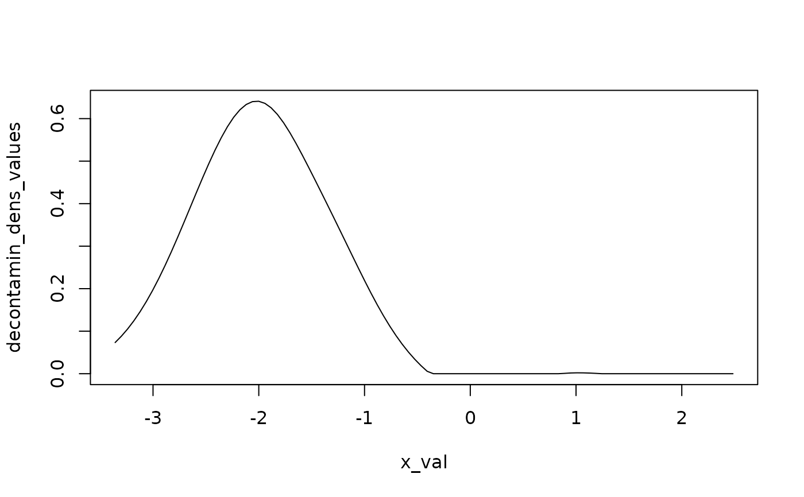
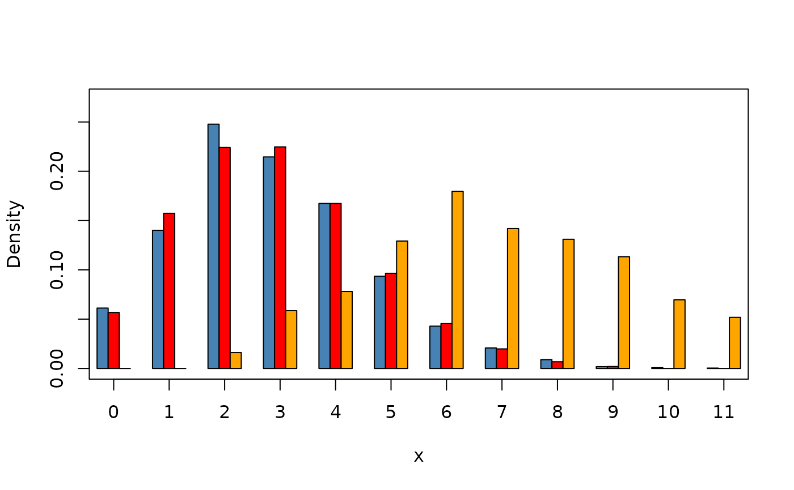

Probability density function of the unknown component
Source:R/decontaminated_dist.R
decontaminated_density.RdEstimates the decontaminated probability density function (PDF) of the unknown component in an admixture model, based on the inversion of the admixture density equation \(l = p f + (1-p) g\).
Value
An object of class decontaminated_density containing:
- data
Original sample.
- support
Type of support ("Continuous" or "Discrete").
- decontaminated_density_fun
A function returning the estimated decontaminated density.
Details
The decontaminated density \(f\) is computed as: $$f(x) = (1 / \hat{p}) [ \hat{l}(x) - (1 - \hat{p}) g(x) ]$$ where:
\(\hat{l}(x)\) is the empirical density of the sample,
\(g(x)\) is the known component’s theoretical density,
\(\hat{p}\) is the estimated mixture weight.
For continuous data, \(\hat{l}(x)\) is estimated using kernel density estimation. For discrete data, it is approximated from normalized frequencies.
Author
Xavier Milhaud xavier.milhaud.research@gmail.com
Examples
## Simulate mixture data:
mixt1 <- twoComp_mixt(n = 400, weight = 0.4,
comp.dist = list("norm", "norm"),
comp.param = list(list("mean" = -2, "sd" = 0.5),
list("mean" = 0, "sd" = 1)))
data1 <- get_mixture_data(mixt1)
## Define the admixture models:
admixMod1 <- admix_model(knownComp_dist = mixt1$comp.dist[[2]],
knownComp_param = mixt1$comp.param[[2]])
## Estimation:
est <- admix_estim(samples = list(data1), admixMod = list(admixMod1),
est_method = 'PS')
## Determine the decontaminated version of the unknown density by inversion:
x <- decontaminated_density(sample1 = data1, admixMod = admixMod1,
estim.p = get_mixing_weights(est))
print(x)
#> Call:decontaminated_density(sample1 = data1, admixMod = admixMod1,
#> estim.p = get_mixing_weights(est))
#>
#> Statistics about the estimated decontaminated density function:
#> Min. 1st Qu. Median Mean 3rd Qu. Max.
#> 0.0000 0.0000 0.1153 0.2322 0.4930 0.6413
#>
summary(x)
#> Call:decontaminated_density(sample1 = data1, admixMod = admixMod1,
#> estim.p = get_mixing_weights(est))
#>
#> Type of support: Continuous
#> Statistical indicators about the support:
#> Min. 1st Qu. Median Mean 3rd Qu. Max.
#> -3.3584 -1.8533 -0.8103 -0.7550 0.2527 2.4840
#>
#> Statistics about the estimated decontaminated density function:
#> Min. 1st Qu. Median Mean 3rd Qu. Max.
#> 0.0000 0.0000 0.1153 0.2322 0.4930 0.6413
#>
plot(x)

####### Discrete support:
mixt1 <- twoComp_mixt(n = 4000, weight = 0.6,
comp.dist = list("pois", "pois"),
comp.param = list(list("lambda" = 3),
list("lambda" = 2)))
mixt2 <- twoComp_mixt(n = 3000, weight = 0.8,
comp.dist = list("pois", "pois"),
comp.param = list(list("lambda" = 3),
list("lambda" = 4)))
mixt3 <- twoComp_mixt(n = 1500, weight = 0.5,
comp.dist = list("pois", "pois"),
comp.param = list(list("lambda" = 7),
list("lambda" = 1)))
data1 <- get_mixture_data(mixt1)
data2 <- get_mixture_data(mixt2)
data3 <- get_mixture_data(mixt3)
## Define the admixture models:
admixMod1 <- admix_model(knownComp_dist = mixt1$comp.dist[[2]],
knownComp_param = mixt1$comp.param[[2]])
admixMod2 <- admix_model(knownComp_dist = mixt2$comp.dist[[2]],
knownComp_param = mixt2$comp.param[[2]])
admixMod3 <- admix_model(knownComp_dist = mixt3$comp.dist[[2]],
knownComp_param = mixt3$comp.param[[2]])
## Estimation:
est <- admix_estim(samples = list(data1,data2),
admixMod = list(admixMod1,admixMod2), est_method = 'IBM')
#> IBM estimators of two unknown proportions are reliable only if the two corresponding
#> unknown component distributions have previously been tested equal (see ?admix_test).
est2 <- admix_estim(samples = list(data3), admixMod = list(admixMod3), est_method = 'PS')
## Determine the decontaminated version of the unknown density by inversion:
x <- decontaminated_density(sample1 = data1, admixMod = admixMod1,
estim.p = get_mixing_weights(est)[1])
y <- decontaminated_density(sample1 = data2, admixMod = admixMod2,
estim.p = get_mixing_weights(est)[2])
z <- decontaminated_density(sample1 = data3, admixMod = admixMod3,
estim.p = get_mixing_weights(est2))
plot(x, offset = -0.2, bar_width = 0.2, col = "steelblue")
plot(y, add_plot = TRUE, offset = 0, bar_width = 0.2, col = "red")
plot(z, add_plot = TRUE, offset = 0.2, bar_width = 0.2, col = "orange")
